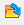

4. Scripting in Mimics Quick Start Guide¶
4.1. Show/hide Editor and Console¶
To show or hide the Mimics Editor or Console, click on the menu Script and select Toggle Editor or Toggle Console.
{kind=link}
4.2. Run a script¶
There are several ways to run a script.
A first method is via the Mimics Editor. Click on the menu Script and Toggle Editor. In the window of the editor, click on the button  to browse to your script. After selecting the script, it will appear in the Editor window. Click on the button  (or press F5 or CTRL-R) to execute it.
(or press F5 or CTRL-R) to execute it.
A second method is via the Run Script button in the Script menu. This allows you to select your script and run it.
{kind=link}
A third method to run a script is via Scripting Library. Please note that you need to configure your scripting preferences in order to make scripts visible in the Scripting Library menu. For details see Section 2.2 of the Introduction. Once you have configured your preferences, scripts will appear in the Scripting Library and you can run the scripts with a single click.
{kind=link}
4.3. Execute Mimics and scripts from Windows Command Prompt (CMD)¶
You can run Mimics and scripts from the Windows Command Prompt (cmd). You can find the available options in the cmd by typing -h or -help as a parameter in cmd (see below). For Materialise Mimics Medical 24.0 use the following commands:
cd "C:\Program Files\Materialise\Mimics Medical 24.0"
MimicsMedical.exe -h
MimicsMedical.exe -help
For Materialise Mimics 24.0:
cd "C:\Program Files\Materialise\Mimics 24.0"
Mimics.exe -h
Mimics.exe -help
The available options and their description are shown below:
MimicsMedical.exe [-help] [-background_mode] [-kill] [-save_log <filename.txt>] [-run_script <script_name.py [args]>]
-h, -help Display this help
-b, -background_mode Runs the application without GUI (in the background). Quits the application after task completion
-k, -kill Quits the application after task completion
-save_log <filename.txt> Saves all logger messages to a file specified
-r, -run_script Runs a python script.
script_name.py Name of the python script to run
[args] Optional parameters to pass into the python script. They can be accessed using sys.argv[n]
Example:
In folder C:\MedData\Scripts there is a copy of the tutorials. To run the import_dicom.py file from Windows command prompt, type the following (it is assumed that Materialise Mimics Medical 24.0 is installed in C: drive for this example):
cd "C:\Program Files\Materialise\Mimics Medical 24.0"
MimicsMedical.exe -b -run_script "C:\MedData\Scripts\import_dicom.py"
For Materialise Mimics 24.0:
cd "C:\Program Files\Materialise\Mimics 24.0"
Mimics.exe -b -run_script "C:\MedData\Scripts\import_dicom.py"
Note: It is recommended to surround the full path with quotes.
4.4. Clean variables and workspace¶
In general, a namespace uniquely identifies a set of names so that there is no ambiguity when objects having different origins but identical names are combined. In essence, a namespace in Python is a mapping of every name you have defined to corresponding objects. Different namespaces can co-exist at a given time but are completely isolated. A namespace containing all the built-in names is created when you start the Python interpreter and exists as long you don’t exit.
The Mimics Editor and Mimics console have a shared namespace. Consequently, when you execute a script from the Editor which creates certain Python variables, these variables will be accessible from the Mimics Console too, and vice versa. This allows for easy experimentation and debugging while writing scripts. Scripts that run via Run Script use the same shared namespace with Console and Editor. In contrast, scripts that are executed from the Scripting Library are executed in each run in their own namespace, which is not shared with other namespaces like Editor and Console. This is to allow for clean execution of your scripts.
There are several ways to clean the namespaces if desired. You can clean the namespace shared between Editor and Console by clicking on the Script menu and Clear All (see image below).
{kind=link}
Another way to clean the namespace of Editor and Console is to right-click on the Console in Mimics and select Clear All as shown below.
{kind=link}
Alternatively, you can clean the namespaces implicitly prior to running scripts from any execution source. This option applies only for the namespace created by the run from Editor, Console or Run script. This setting is accessible from the menu Edit in Preferences (see image below).
{kind=link}
4.5. Getting started with the Mimics API¶
Python interaction with Mimics is done via the Mimics Application Programming Interface (API). Via this API, it is possible to call many of the regular Mimics features (segmentation, measurements, etc), access the objects in a Mimics project, etc. A complete overview of the API can be found in the “Mimics API” section. Below we explain the basic concept by means of a simple example.
The required module is called mimics. This module comes as part of the Mimics installation, and is imported automatically when using Mimics (so there is no need to import it explicitly when executing a Python script within Mimics). Accessing the Mimics API is done via this module, as illustrated below.
{kind=link}
4.6. Using the Mimics API¶
Like many programming languages, Python supports Object Oriented Programming. This is the basis of the Mimics API as well: each object is an instance of a class. Dot notation is used as the way to say to an instance to use one of the functions or properties of the class it belongs to. For instance, the method create_mask can be called to create a new object of type mimics.Mask as follows.
{kind=link}
The Mimics API is organized into submodules, reflecting the structure of the regular Mimics menus. For instance, there are submodules mimics.file, mimics.segment, mimics.analyze, etc. In addition, the Mimics API includes several other useful modules and classes as listed in the “Mimics API” section.
You can use Ctrl + Space to get autocomplete. Note that autocomplete works for names of methods, arguments, variables, etc. To confirm the selection of the module (i.e: mimics.segment), functionality (i.e: mimics.segment.threshold()) or argument ((i.e: mimics.segment.threshold(mask=))) you can use Tab or Enter.
4.7. Working with Hounsfield and Grayvalues pixel units¶
In the regular Mimics UI you can choose to work with Hounsfield units or gray values. You can modify the setting in the Preferences in the File menu (in the tab General). The Mimics API, however, works only with gray values (i.e., all API methods that work with thresholds etc assume that the unit is gray values), regardless of your preference setting. If you need to work with Hounsfield units, there are two Mimics APIs that will assist you: HU2GV converts from Hounsfield Units (HU) to Gray Values (GV), and GV2HU does vice versa. Below is an example.
# Values in HU
low_hu = 240
high_hu = 3071
# Convert values to GV
low_gv = mimics.segment.HU2GV(low_hu)
high_gv = mimics.segment.HU2GV(high_hu)
# Use the tool with the converted values
mimics.segment.threshold(mask=m,threshold_min=low_gv,threshold_max=high_gv)
4.8. Access to Mimics objects¶
A frequently used class is mimics.data, which allows you to access most of the types of Mimics objects that are present in the Mimics project management tab (masks, parts, measurements, planes, points, reslice views, etc).
Below are some examples on how to access parts and masks in the project Heart.mcs that is included in the installation of Mimics (MedData folder). This project contains three masks with names LA, LV and Aorta, and the respective parts.
To access the first mask of the project:
# First mask of the project
mask1 = mimics.data.masks[0]
print(mask1.name)
To access the mask with name LA:
# Mask LA
mask1 = mimics.data.masks.find("LA")
print(mask1.name)
In the above example there is only one matching mask (one mask with the name “LA”). When there are multiple matching results, find will return only one result, but the Mimics API also has a similar method filter that returns all matches. Note that find and filter also support regular expressions.
To assign the part with name Aorta to a variable:
# Find part Aorta
mask1 = mimics.data.parts.find("Aorta")
print(mask1)
To delete the mask LV:
# Delete LV mask
lv = mimics.data.masks.find("LV")
mimics.data.masks.delete(lv)
To duplicate all the masks and parts:
# Duplicate all the masks and parts of the opened project
for m in mimics.data.masks:
mimics.data.masks.duplicate(m)
for p in mimics.data.parts:
mimics.data.parts.duplicate(p)
To explore which Mimics objects are accessible with Mimics API you can type mimics.data. in the Editor or Console. Autocomplete will show the full list of types of objects that are availabe in the data container.
4.9. Access to the properties of Mimics objects¶
Most of the Mimics objects can be accessed with scripting and are reprented as a class in Mimics API. In Python attribute reference is the most common understood action. Consequently to refer to the properties of a Mimics object you can simply refer to the attributes of the instance of the class that the Mimics object is assigned to. See the examples below:
# The first mask that is included in the mask container is assigned to variable m
m = mimics.data.masks[0]
# To access the attributes of this instance of mimics.segment.Mask class use the dot notation.
# That way you can access properties of the Mimics mask that is assigned to variable m. See below:
print(m.average_value)
c = m.color
n = m.number_of_pixels
b = m.get_voxel_buffer()
# To get a list of the valid attributes(built-in and special) for that object, type the following:
print(dir(m))
4.10. Activate Mimics tools with Python¶
Using the Mimics API you can not only perform most of the operations in Mimics via API calls but you can also launch or ‘activate’ some of the regular Mimics tools with their regular graphical user interface. For example, thresholding is an operation that can be performed in the following two ways. The first is to perform thresholding as part of a script without interaction with the user. All the parameters required are defined in the script:
# Thresholding without user interaction
m = mimics.data.masks[0]
l_t = 100
h_t = 3000
mimics.segment.threshold(mask=m,threshold_min=l_t, threshold_max=h_t)
The second way is by activating the thresholding tool. You can interactively choose the low and the high threshold that will be applied to the chosen mask (see the image below). The script will continue after you confirm your choice.
# Thresholding with user interaction
m = mimics.data.masks[0]
mimics.segment.activate_thresholding(mask=m)
{kind=link}
Note: Currently, only a limited number of selected tools have such an ‘activate’ API.
4.11. Display and suppress dialog boxes¶
In the previous section it was briefly explained that there are some tools that can be activated with scripting and require interaction with the user. Using the Mimics API you can additionaly create your own dialog boxes or even suppress those that automatically appear in Mimics (e.g. change orientation of DICOM images). Below you can find an example on how to suppress some of the built in dialog boxes of Mimics with predefined answers.
# Set predefined answers to suppress some of the built in dialog boxes
mimics.dialogs.set_predefined_answer("CannotConvertProject", "Yes")
mimics.dialogs.set_predefined_answer("ProjectHasNotValidCS", "Yes")
mimics.dialogs.set_predefined_answer("ChangeOrientation", "default")
mimics.dialogs.set_predefined_answer("FixImagesPositioning", "Yes")
mimics.dialogs.set_predefined_answer("SaveChangedProject", "No")
# Code that imports DICOM images
# ...
# ...
In the Mimics API there is the possibility to create your own dialog boxes that can give you customised interaction with the script. Below you can find an example on how to create a dialog box with some predefined list of possible answers.
# Create customised dialog boxes with scripting
# ...
# Code that performs an operation
# ...
sel = mimics.dialogs.question_box(message="Please indicate the region to continue", buttons="LA;LV;Aorta", title= "Region Selection")
# ...
{kind=link}